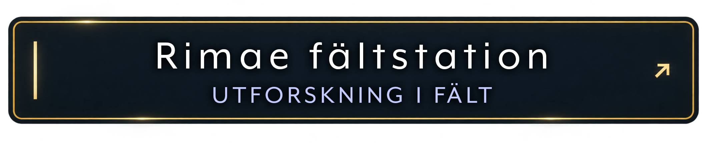
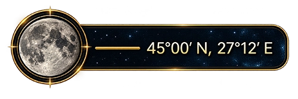
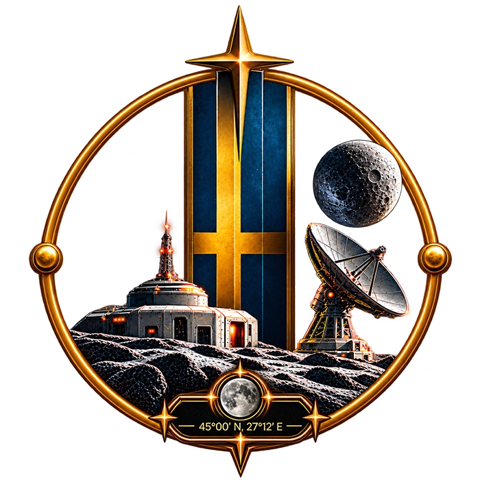
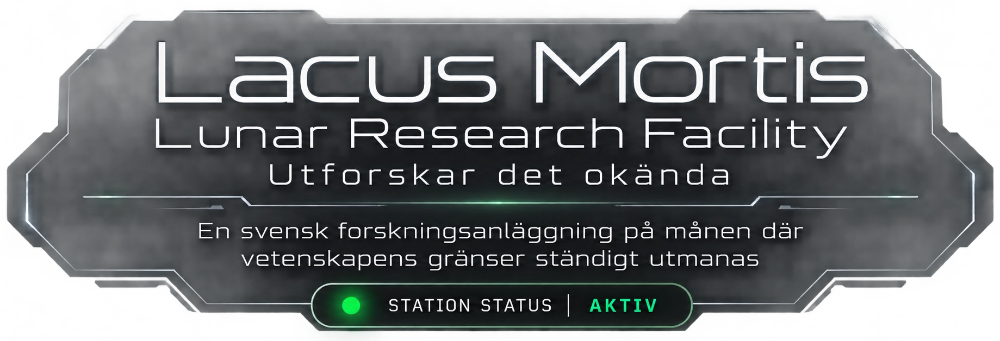
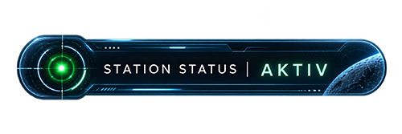

Vetenskap, innovation och internationellt samarbete driver oss framåt i utforskningen av månens okända värld. Genom banbrytande forskning, avancerad teknik och nya upptäckter utmanar vi gränserna för vad som är möjligt – med visionen om en hållbar framtid, både på jorden och bortom månen.
I en av månens mest outforskade regioner söker vi svar på frågor som kan förändra vår förståelse av universum.